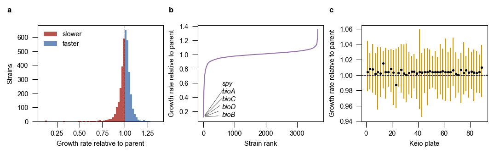
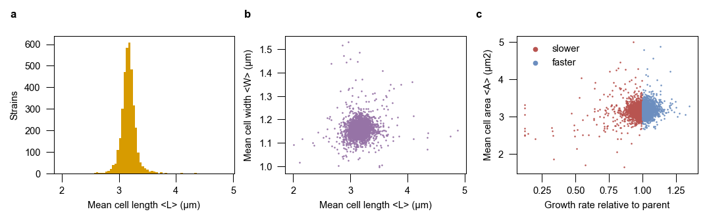
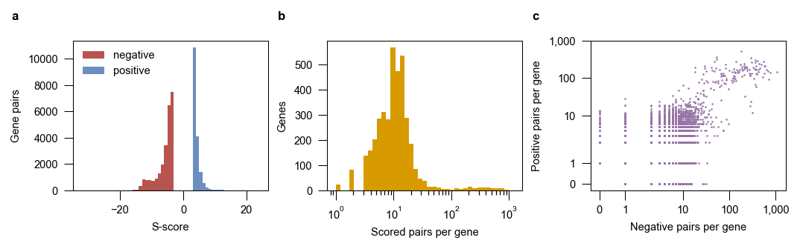
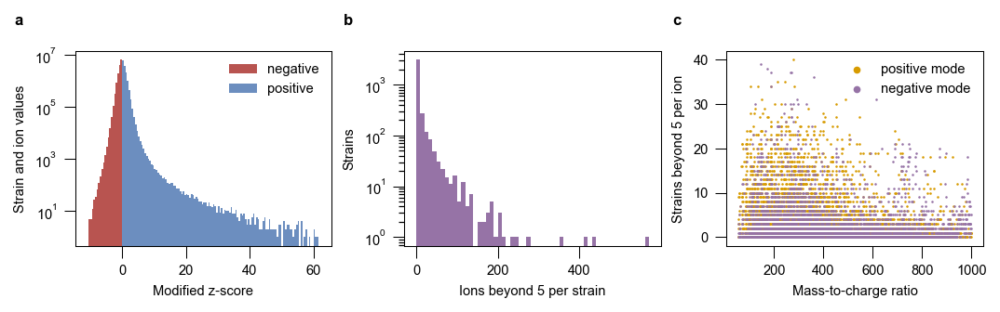

Note
This page is the notebook ecoli_datasets.ipynb with the outputs of one run. Open it in Google Colab to run it in the browser with nothing installed. The plotting code is collapsed; open Show the plotting code to read it.
E. coli datasets in torchcell

Four built Escherichia coli K-12 datasets, loaded from the public tc-data endpoint. The cells that load and read the data are the interface to copy. The plotting cells are collapsed: expand one to see how its figure is drawn. To run it with nothing installed, open it in Google Colab with the badge above and choose Runtime, Run all: the first cell installs torchcell. On your own machine, run the cells top to bottom in an empty directory with torchcell installed (Python 3.13 or newer). The stores download into ./data/torchcell/ and the figures are written to ./figures/.
# In Google Colab this installs torchcell. Anywhere else it does nothing.
import sys
if "google.colab" in sys.modules:
%pip install -q "torchcell>=1.8.6"
Setup
Setting TC_DATA_URL makes each loader download its built store. show prints one part of a record as indented JSON.
import hashlib
import json
import os
from pathlib import Path
from typing import Any
import numpy as np
import pandas as pd
from torchcell.datasets.artifact import content_sha256
from torchcell.datasets.client import DatasetClient
from torchcell.datasets.ecoli.babu2014 import GeneInteractionBabu2014Dataset
from torchcell.datasets.ecoli.campos2018 import (
FEATURE_UNITS,
MORPHOLOGY_ASSAY,
GrowthRateCampos2018Dataset,
MorphologyCampos2018Dataset,
)
from torchcell.datasets.ecoli.fuhrer2017 import MetabolomeFuhrer2017Dataset
from torchcell.endpoint_http import DEFAULT_URL
# A loader downloads its built store only when TC_DATA_URL is set. Without it the loader
# builds the store from the publisher's files, which is the developer path.
os.environ.setdefault("TC_DATA_URL", DEFAULT_URL)
DATA = Path("data/torchcell") # each dataset unpacks into DATA/<slug>/
pd.set_option("display.precision", 4)
def brief(value: Any, depth: int = 1) -> Any:
"""A record part with anything nested deeper than ``depth`` replaced by its size."""
if isinstance(value, dict):
kept = {k: v for k, v in value.items() if k != "provenance_gaps"}
if depth < 0:
return f"<{len(kept)} fields>"
return {k: brief(v, depth - 1) for k, v in kept.items()}
if isinstance(value, list):
return f"<{len(value)} items>" if value else []
return getattr(value, "value", value) # an enum member prints as its value
def show(part: dict[str, Any]) -> None:
"""Print one part of a record as indented JSON, two levels deep."""
print(json.dumps(brief(part), indent=2, default=str))
Figure style (collapsed): one row of three panels, red below and blue above a reference level.
Show the plotting code
import matplotlib.pyplot as plt
from matplotlib.figure import Figure
from torchcell.utils import (
PANEL_WIDTHS_MM,
PLOT_PALETTE,
mm_to_in,
panel_label,
)
ORANGE, RED, PURPLE, YELLOW, BLUE, GRAY = PLOT_PALETTE[:6]
NEGATIVE, POSITIVE = RED, BLUE # below and above a reference level, in every figure
plt.rcParams.update(
{
"font.family": ["Arial", "DejaVu Sans"],
"font.size": 7,
"axes.labelsize": 7,
"axes.titlesize": 7,
"xtick.labelsize": 7,
"ytick.labelsize": 7,
"legend.fontsize": 7,
"axes.linewidth": 0.5,
"xtick.major.width": 0.5,
"ytick.major.width": 0.5,
"legend.frameon": False,
"figure.dpi": 150, # size of a figure shown in a notebook
"svg.fonttype": "none", # text stays text in the SVG
"svg.hashsalt": "torchcell", # the same bytes on every run
}
)
FIGURES = Path("figures")
FIGURES.mkdir(exist_ok=True)
def three_panels() -> tuple[Figure, Any]:
"""One row of three panels, 179 mm wide."""
return plt.subplots(
1,
3,
figsize=(mm_to_in(PANEL_WIDTHS_MM["full"]), mm_to_in(54)),
layout="constrained",
)
def save(figure: Figure, name: str) -> None:
"""Letter the panels a to c and write figures/<name>.svg and .png."""
for axis, letter in zip(figure.axes, "abc", strict=True):
panel_label(axis, letter)
figure.savefig(FIGURES / f"{name}.svg", metadata={"Date": None})
figure.savefig(FIGURES / f"{name}.png", dpi=200)
What the endpoint serves
client = DatasetClient.from_env()
print("endpoint", client.url)
SLUGS = (
"ecoli_growth_rate_campos2018",
"ecoli_morphology_campos2018",
"gene_interaction_babu2014",
"metabolome_fuhrer2017",
)
for slug in SLUGS:
artifact = client.select(slug) # newest archive the installed major.minor reads
if artifact is None:
raise SystemExit(f"{client.url} serves no {slug} archive this torchcell reads")
print(slug)
print(f" loader {artifact.dataset_class}")
print(f" archive {artifact.archive} ({artifact.archive_bytes:,} bytes)")
print(f" records {artifact.n_experiments:,}")
print(f" release knowledge graph {artifact.kg_version} ({artifact.kg_release})")
endpoint http://torchcell-database.ncsa.illinois.edu:8724
ecoli_growth_rate_campos2018
loader GrowthRateCampos2018Dataset
archive ecoli_growth_rate_campos2018-1.8.4-ef455265.tar.xz (144,152 bytes)
records 3,664
release knowledge graph 4.0 (2026.10.17-4295f7ca)
ecoli_morphology_campos2018
loader MorphologyCampos2018Dataset
archive ecoli_morphology_campos2018-1.8.4-52643bef.tar.xz (856,456 bytes)
records 3,664
release knowledge graph 4.0 (2026.10.17-4295f7ca)
gene_interaction_babu2014
loader GeneInteractionBabu2014Dataset
archive gene_interaction_babu2014-1.8.4-412a73ed.tar.xz (1,049,192 bytes)
records 42,705
release knowledge graph 4.0 (2026.10.17-4295f7ca)
metabolome_fuhrer2017
loader MetabolomeFuhrer2017Dataset
archive metabolome_fuhrer2017-1.8.4-7eb33983.tar.xz (81,780,576 bytes)
records 3,806
release knowledge graph 4.0 (2026.10.17-4295f7ca)
Growth rate (Campos 2018)
One record per Keio strain. The label is the maximal growth rate relative to the parent strain BW25113.
growth = GrowthRateCampos2018Dataset(root=str(DATA / "ecoli_growth_rate_campos2018"))
print(f"{len(growth):,} records")
3,664 records
A record is a dict with three keys: experiment (genotype, environment, phenotype), reference and publication.
record = growth[0] # a dict with three keys: experiment, reference, publication
experiment = record["experiment"]
show(experiment["genotype"]["perturbations"][0])
show(experiment["environment"])
show(experiment["phenotype"])
print("reference fitness", record["reference"]["phenotype_reference"]["fitness"])
print("source", record["publication"]["doi_url"])
{
"systematic_gene_name": "BW25113_1967",
"perturbed_gene_name": "hchA",
"gene_namespace": "ecoli_k12_bw25113_locus_tag",
"identifier_mapping": {
"source_identifier": "hchA",
"route": "gene_symbol"
},
"provenance": "engineered",
"state": "absent",
"mechanism_so_id": "SO:0000159",
"mechanism_so_name": "deletion",
"description": "Gene deletion strain, with its collection, cassette and construction as stated",
"perturbation_type": "deletion_strain",
"deletion_type": "strain",
"collection": "Keio collection",
"cassette": "kanamycin-resistance cassette",
"construction": {
"strain_accession": null,
"lab": null,
"batch": null,
"plate": "1",
"well": "A001"
}
}
{
"media": {
"name": "M9 with 0.1% (w/v) casamino acids and 0.2% (w/v) glucose (Campos 2018)",
"state": "liquid",
"is_synthetic": false,
"base_medium": "M9",
"components": "<6 items>",
"dropouts": [],
"provenance": "<1 items>"
},
"temperature": {
"value": 30.0,
"unit": "Celsius"
},
"perturbations": [],
"aerobicity": "aerobic",
"duration_hours": null,
"duration_generations": null,
"dilution_rate_per_hour": null
}
{
"graph_level": "global",
"label_name": "fitness",
"label_statistic_name": "fitness_se",
"fitness": 1.0201256910920211,
"fitness_se": null,
"fitness_std": null,
"n_samples": 1,
"fitness_uncertainty": null,
"fitness_uncertainty_type": null,
"sample_unit": "biological_replicate",
"screen_id": null
}
reference fitness 1.0
source https://doi.org/10.15252/msb.20177573
All records as a table.
rows = []
for r in (growth[i] for i in range(len(growth))):
deletion = r["experiment"]["genotype"]["perturbations"][0]
rows.append(
{
"gene": deletion["perturbed_gene_name"],
"locus_tag": deletion["systematic_gene_name"],
"plate": int(deletion["construction"]["plate"]),
"fitness": r["experiment"]["phenotype"]["fitness"],
}
)
growth_table = pd.DataFrame(rows)
print(
"fitness min {:.4f} median {:.4f} max {:.4f}".format(
growth_table["fitness"].min(),
growth_table["fitness"].median(),
growth_table["fitness"].max(),
)
)
growth_table.head(6)
fitness min 0.1218 median 1.0042 max 1.3514
| gene | locus_tag | plate | fitness | |
|---|---|---|---|---|
| 0 | hchA | BW25113_1967 | 1 | 1.0201 |
| 1 | bglG | BW25113_3723 | 1 | 1.1317 |
| 2 | cytR | BW25113_3934 | 1 | 0.8306 |
| 3 | fnr | BW25113_1334 | 1 | 0.9604 |
| 4 | hupB | BW25113_0440 | 1 | 1.0240 |
| 5 | nagC | BW25113_0676 | 1 | 0.9816 |
Show the plotting code
figure, (left, middle, right) = three_panels()
edges = np.arange(0.10, 1.38, 0.02)
slower = growth_table["fitness"] < 1.0
left.hist(
growth_table.loc[slower, "fitness"], bins=edges, color=NEGATIVE, label="slower"
)
left.hist(
growth_table.loc[~slower, "fitness"], bins=edges, color=POSITIVE, label="faster"
)
left.axvline(1.0, color="black", linewidth=0.5, linestyle="--")
left.set(xlabel="Growth rate relative to parent", ylabel="Strains")
left.legend()
ranked = growth_table.sort_values("fitness").reset_index(drop=True)
middle.plot(ranked.index + 1, ranked["fitness"], color=PURPLE, linewidth=1)
for rank, row in ranked.head(5).iterrows():
middle.annotate(
row["gene"],
(rank + 1, row["fitness"]),
xytext=(600, 0.15 + 0.11 * rank),
fontstyle="italic",
va="center",
arrowprops={"arrowstyle": "-", "linewidth": 0.3},
)
middle.set(xlabel="Strain rank", ylabel="Growth rate relative to parent")
plates = growth_table.groupby("plate")["fitness"].quantile([0.25, 0.5, 0.75]).unstack()
right.vlines(plates.index, plates[0.25], plates[0.75], color=ORANGE, linewidth=1)
right.plot(plates.index, plates[0.5], "o", color="black", markersize=1.5)
right.axhline(1.0, color="black", linewidth=0.5, linestyle="--")
right.set(xlabel="Keio plate", ylabel="Growth rate relative to parent")
save(figure, "ecoli_growth_rate_campos2018")

The same record as typed objects
transform_item validates a record through the pydantic classes of the schema.
typed = growth.transform_item(record) # the same record as validated pydantic objects
experiment = typed["experiment"]
print(type(experiment).__name__, type(experiment.phenotype).__name__)
print(
experiment.genotype.perturbations[0].perturbed_gene_name,
experiment.phenotype.fitness,
)
FitnessExperiment FitnessPhenotype
hchA 1.0201256910920211
Cell shape and cell cycle (Campos 2018)
The same strains from the same imaging screen, with cell-shape means and cell-cycle features.
morphology = MorphologyCampos2018Dataset(root=str(DATA / "ecoli_morphology_campos2018"))
print(f"{len(morphology):,} records")
show(morphology[0]["experiment"]["phenotype"])
3,664 records
{
"graph_level": "global",
"label_name": "morphology",
"label_statistic_name": "morphology_coefficient_of_variation",
"assay": "campos2018",
"morphology": {
"<L>": 3.19546621533025,
"<W>": 1.17312345844031,
"<A>": 3.23402304903965,
"<V>": 2.73935580483487,
"<SA>": 11.4016813687147,
"<P>": 7.58374863028241,
"<C>": 0.720139126605895,
"<Ar>": 0.38481367194436,
"<SA/V>": 4.20669389106828,
"<NA>": 1.58381392077006,
"rho_CD": 0.175309454457351,
"CDN_C0": 0.686654877888511,
"Rel.timing div": 0.646839306013814,
"Rel.timing nuc": 0.578074023057654,
"%2N": 0.331474592957771
},
"morphology_coefficient_of_variation": {
"CV_L": 0.236850387516941,
"CV_W": 0.0481438146291384,
"CV_A": 0.260557043912679,
"CV_V": 0.271618792599827,
"CV_SA": 0.238477391654462,
"CV_P": 0.206559266634767,
"CV_C": 0.143766140830845,
"CV_Ar": 0.247848604834858,
"CV_SA/V": 0.0904532214293887,
"CV_DR": 0.0617592186847581,
"CV_NA": 0.280448549177046
},
"n_samples": 245,
"sample_unit": "cell"
}
Means (<...>) go to morphology and coefficients of variation (CV_...) to morphology_coefficient_of_variation. The nucleoid and cell-cycle features exist only for strains imaged with a nucleoid channel.
# The assay vocabulary names every feature a record can hold, with its unit.
features = pd.DataFrame(
feature.model_dump(mode="json") for feature in MORPHOLOGY_ASSAY.features
).drop(columns="note")
print(features.to_string(index=False))
features
symbol name group statistic unit
<L> Mean cell length morphological mean µm
CV_L Cell length variability morphological coefficient_of_variation None
<W> Mean cell width morphological mean µm
CV_W Cell width variability morphological coefficient_of_variation None
<A> Mean cell area morphological mean µm2
CV_A Cell area variability morphological coefficient_of_variation None
<V> Mean cell volume morphological mean µm3
CV_V Cell volume variability morphological coefficient_of_variation None
<SA> Mean cell surface area morphological mean µm2
CV_SA Cell surface area variability morphological coefficient_of_variation None
<P> Mean cell perimeter morphological mean µm
CV_P Cell perimeter variability morphological coefficient_of_variation None
<C> Mean circularity morphological mean None
CV_C Circularity variability morphological coefficient_of_variation None
<Ar> Mean aspect ratio morphological mean None
CV_Ar Aspect ratio variability morphological coefficient_of_variation None
<SA/V> Mean surface area-to-volume ratio morphological mean µm-1
CV_SA/V Surface area-to-volume ratio variability morphological coefficient_of_variation None
CV_DR Division ratio variability morphological coefficient_of_variation None
<NA> Mean nucleoid area morphological mean µm2
CV_NA Nucleoid area variability morphological coefficient_of_variation None
rho_CD Correlation in nucleoid and cell constriction cell_cycle pearson_correlation None
CDN_C0 Nucleoid constriction degree at the initiation of cell constriction cell_cycle regression_intercept None
Rel.timing div Relative timing of cell constriction cell_cycle inferred_relative_timing None
Rel.timing nuc Relative timing of nucleoid separation cell_cycle inferred_relative_timing None
%2N Fraction of cells with 2 nucleoids cell_cycle fraction_of_cells None
| symbol | name | group | statistic | unit | |
|---|---|---|---|---|---|
| 0 | <L> | Mean cell length | morphological | mean | µm |
| 1 | CV_L | Cell length variability | morphological | coefficient_of_variation | None |
| 2 | <W> | Mean cell width | morphological | mean | µm |
| 3 | CV_W | Cell width variability | morphological | coefficient_of_variation | None |
| 4 | <A> | Mean cell area | morphological | mean | µm2 |
| 5 | CV_A | Cell area variability | morphological | coefficient_of_variation | None |
| 6 | <V> | Mean cell volume | morphological | mean | µm3 |
| 7 | CV_V | Cell volume variability | morphological | coefficient_of_variation | None |
| 8 | <SA> | Mean cell surface area | morphological | mean | µm2 |
| 9 | CV_SA | Cell surface area variability | morphological | coefficient_of_variation | None |
| 10 | <P> | Mean cell perimeter | morphological | mean | µm |
| 11 | CV_P | Cell perimeter variability | morphological | coefficient_of_variation | None |
| 12 | <C> | Mean circularity | morphological | mean | None |
| 13 | CV_C | Circularity variability | morphological | coefficient_of_variation | None |
| 14 | <Ar> | Mean aspect ratio | morphological | mean | None |
| 15 | CV_Ar | Aspect ratio variability | morphological | coefficient_of_variation | None |
| 16 | <SA/V> | Mean surface area-to-volume ratio | morphological | mean | µm-1 |
| 17 | CV_SA/V | Surface area-to-volume ratio variability | morphological | coefficient_of_variation | None |
| 18 | CV_DR | Division ratio variability | morphological | coefficient_of_variation | None |
| 19 | <NA> | Mean nucleoid area | morphological | mean | µm2 |
| 20 | CV_NA | Nucleoid area variability | morphological | coefficient_of_variation | None |
| 21 | rho_CD | Correlation in nucleoid and cell constriction | cell_cycle | pearson_correlation | None |
| 22 | CDN_C0 | Nucleoid constriction degree at the initiation... | cell_cycle | regression_intercept | None |
| 23 | Rel.timing div | Relative timing of cell constriction | cell_cycle | inferred_relative_timing | None |
| 24 | Rel.timing nuc | Relative timing of nucleoid separation | cell_cycle | inferred_relative_timing | None |
| 25 | %2N | Fraction of cells with 2 nucleoids | cell_cycle | fraction_of_cells | None |
morphology_table = pd.DataFrame(
{
"gene": r["experiment"]["genotype"]["perturbations"][0]["perturbed_gene_name"],
**r["experiment"]["phenotype"]["morphology"],
}
for r in (morphology[i] for i in range(len(morphology)))
).set_index("gene")
unit = FEATURE_UNITS.value # feature symbol -> unit, as the release states it
print("table shape ", morphology_table.shape)
print(
"features per strain:",
morphology_table.notna().sum(axis=1).value_counts().to_dict(),
)
print("units ", {symbol: unit[symbol] for symbol in ("<L>", "<W>", "<A>")})
morphology_table.head(6)
table shape (3664, 15)
features per strain: {15: 3422, 9: 242}
units {'<L>': 'µm', '<W>': 'µm', '<A>': 'µm2'}
| <L> | <W> | <A> | <V> | <SA> | <P> | <C> | <Ar> | <SA/V> | <NA> | rho_CD | CDN_C0 | Rel.timing div | Rel.timing nuc | %2N | |
|---|---|---|---|---|---|---|---|---|---|---|---|---|---|---|---|
| gene | |||||||||||||||
| hchA | 3.1955 | 1.1731 | 3.2340 | 2.7394 | 11.4017 | 7.5837 | 0.7201 | 0.3848 | 4.2067 | 1.5838 | 0.1753 | 0.6867 | 0.6468 | 0.5781 | 0.3315 |
| bglG | 3.1495 | 1.1772 | 3.1965 | 2.7158 | 11.2757 | 7.4770 | 0.7325 | 0.3897 | 4.1760 | 1.5272 | 0.4017 | 0.5812 | 0.7282 | 0.6562 | 0.2691 |
| cytR | 3.1203 | 1.2074 | 3.2240 | 2.7960 | 11.4182 | 7.4732 | 0.7420 | 0.4045 | 4.1018 | 1.5670 | 0.5403 | 0.5501 | 0.6898 | 0.6252 | 0.2903 |
| fnr | 3.1126 | 1.1413 | 3.0587 | 2.5081 | 10.6631 | 7.3717 | 0.7219 | 0.3790 | 4.2452 | 1.5483 | 0.5705 | 0.4603 | 0.6780 | 0.6117 | 0.3047 |
| hupB | 3.3444 | 1.0857 | 3.1668 | 2.4884 | 10.9452 | 7.7780 | 0.6767 | 0.3411 | 4.3908 | 1.4430 | 0.5330 | 0.5900 | 0.7660 | 0.7256 | 0.2058 |
| nagC | 3.1478 | 1.1609 | 3.1520 | 2.6341 | 11.0576 | 7.4745 | 0.7244 | 0.3834 | 4.2069 | 1.5803 | 0.7041 | 0.5140 | 0.6832 | 0.6237 | 0.2982 |
The growth-rate dataset holds the same strains in the same order.
# The two Campos 2018 datasets hold the same strains in the same order, so the growth
# rate of each strain sits beside its cell shape.
assert list(morphology_table.index) == list(growth_table["gene"])
shape_growth = morphology_table.assign(fitness=growth_table["fitness"].to_numpy())
rank_correlation = shape_growth["<A>"].rank().corr(shape_growth["fitness"].rank())
print(f"strains {len(shape_growth):,}")
print(f"Spearman correlation of cell area with growth rate {rank_correlation:.3f}")
strains 3,664
Spearman correlation of cell area with growth rate 0.095
Show the plotting code
figure, (left, middle, right) = three_panels()
left.hist(morphology_table["<L>"], bins=np.arange(2.0, 4.92, 0.04), color=ORANGE)
left.set(xlabel=f"Mean cell length <L> ({unit['<L>']})", ylabel="Strains")
middle.scatter(
morphology_table["<L>"],
morphology_table["<W>"],
s=1.5,
color=PURPLE,
linewidths=0,
rasterized=True,
)
middle.set(
xlabel=f"Mean cell length <L> ({unit['<L>']})",
ylabel=f"Mean cell width <W> ({unit['<W>']})",
)
slower = shape_growth["fitness"] < 1.0
for mask, color, label in ((slower, NEGATIVE, "slower"), (~slower, POSITIVE, "faster")):
right.scatter(
shape_growth.loc[mask, "fitness"],
shape_growth.loc[mask, "<A>"],
s=1.5,
color=color,
linewidths=0,
rasterized=True,
label=label,
)
right.set(
xlabel="Growth rate relative to parent",
ylabel=f"Mean cell area <A> ({unit['<A>']})",
)
right.legend(markerscale=3)
save(figure, "ecoli_morphology_campos2018")

Genetic interactions (Babu 2014)
One record per double mutant of the released high-confidence set. The label is the pair’s S-score.
interaction = GeneInteractionBabu2014Dataset(
root=str(DATA / "gene_interaction_babu2014")
)
print(f"{len(interaction):,} records")
record = interaction[0]
for perturbation in record["experiment"]["genotype"]["perturbations"]:
print(
perturbation["perturbed_gene_name"],
perturbation["systematic_gene_name"],
"|",
perturbation["collection"],
)
show(record["experiment"]["phenotype"])
42,705 records
thrA b0002 | Hfr Cavalli (Hfr C) donor query strains
dnaJ b0015 | Keio collection
{
"graph_level": "hyperedge",
"label_name": "gene_interaction",
"label_statistic_name": "gene_interaction_p_value",
"gene_interaction": -4.43348,
"gene_interaction_p_value": null,
"screen_id": "This Study",
"n_samples": 8,
"sample_unit": "colony",
"gene_interaction_uncertainty": null,
"gene_interaction_uncertainty_type": null
}
rows = []
for r in (interaction[i] for i in range(len(interaction))):
first, second = r["experiment"]["genotype"]["perturbations"]
rows.append(
{
"gene_a": first["perturbed_gene_name"],
"gene_b": second["perturbed_gene_name"],
"id_a": first["systematic_gene_name"],
"id_b": second["systematic_gene_name"],
"s_score": r["experiment"]["phenotype"]["gene_interaction"],
}
)
pairs = pd.DataFrame(rows)
print("genes in any pair:", len(interaction.gene_set))
print("negative scores:", int((pairs["s_score"] < 0).sum()))
print("positive scores:", int((pairs["s_score"] > 0).sum()))
pairs.nsmallest(6, "s_score")
genes in any pair: 3880
negative scores: 25239
positive scores: 17466
| gene_a | gene_b | id_a | id_b | s_score | |
|---|---|---|---|---|---|
| 11807 | oppA | topA | b1243 | b1274 | -30.9240 |
| 3959 | tig | accD | b0436 | b2316 | -28.1061 |
| 15748 | sufC | fdx | b1682 | b2525 | -24.9893 |
| 34365 | yahI | gntY | b0323 | b3414 | -24.2600 |
| 34578 | rpoS | gntY | b2741 | b3414 | -23.9941 |
| 3659 | bolA | rpoS | b0435 | b2741 | -23.9937 |
Show the plotting code
figure, (left, middle, right) = three_panels()
edges = np.arange(-32, 25, 1)
negative = pairs["s_score"] < 0
left.hist(pairs.loc[negative, "s_score"], bins=edges, color=NEGATIVE, label="negative")
left.hist(pairs.loc[~negative, "s_score"], bins=edges, color=POSITIVE, label="positive")
left.set(xlabel="S-score", ylabel="Gene pairs")
left.legend()
# One row per gene: how many of its pairs score below zero and how many above.
per_gene = (
pd.concat(
[
pairs[["id_a", "s_score"]].rename(columns={"id_a": "id"}),
pairs[["id_b", "s_score"]].rename(columns={"id_b": "id"}),
]
)
.assign(negative=lambda t: t["s_score"] < 0, positive=lambda t: t["s_score"] > 0)
.groupby("id")[["negative", "positive"]]
.sum()
)
degree = per_gene["negative"] + per_gene["positive"]
middle.hist(degree, bins=np.logspace(0, np.log10(degree.max() + 1), 40), color=ORANGE)
middle.set(xscale="log", xlabel="Scored pairs per gene", ylabel="Genes")
right.scatter(
per_gene["negative"],
per_gene["positive"],
s=1.5,
color=PURPLE,
linewidths=0,
rasterized=True,
)
right.set(
xscale="symlog",
yscale="symlog",
xlabel="Negative pairs per gene",
ylabel="Positive pairs per gene",
)
for axis in (right.xaxis, right.yaxis): # linear from 0 to 1, logarithmic above
axis.set_ticks([0, 1, 10, 100, 1000], labels=["0", "1", "10", "100", "1,000"])
axis.minorticks_off()
save(figure, "gene_interaction_babu2014")

Metabolome (Fuhrer 2017)
One record per Keio strain. The label maps each detected ion to a modified z-score. An ion is a mass feature of the negative or the positive instrument mode, keyed neg_0001, pos_0001 and so on, and ions.csv gives its mass-to-charge ratio.
metabolome = MetabolomeFuhrer2017Dataset(root=str(DATA / "metabolome_fuhrer2017"))
print(f"{len(metabolome):,} records")
record = metabolome[0]
levels = record["experiment"]["phenotype"]["metabolite_level"] # ion key -> z-score
print("strain", record["experiment"]["genotype"]["perturbations"][0]["strain_label"])
print("ions", len(levels), "first", dict(list(levels.items())[:4]))
ions = pd.read_csv(Path(metabolome.preprocess_dir) / "ions.csv") # ion key -> m/z
# The ions are mass features of the two instrument modes, not named metabolites.
print(ions.groupby("mode")["deposit_mz"].agg(["size", "min", "max"]).to_string())
ions.head(4)
3,806 records
strain aaeA
ions 7534 first {'neg_0001': -0.4309, 'neg_0002': -0.1195, 'neg_0003': -0.6621, 'neg_0004': 0.9284}
size min max
mode
neg 3169 56.9972 998.7170
pos 4365 55.0177 998.7871
| key | mode | ion_index | deposit_mz | table_ev1b_mz | |
|---|---|---|---|---|---|
| 0 | neg_0001 | neg | 1 | 56.9972 | 56.9962 |
| 1 | neg_0002 | neg | 2 | 57.0358 | 57.0348 |
| 2 | neg_0003 | neg | 3 | 57.0574 | 57.0565 |
| 3 | neg_0004 | neg | 4 | 58.0390 | 58.0380 |
ion_keys = list(levels)
strains, matrix_rows = [], []
for r in (metabolome[i] for i in range(len(metabolome))):
perturbations = r["experiment"]["genotype"]["perturbations"]
strains.append("+".join(p["perturbed_gene_name"] for p in perturbations))
row_levels = r["experiment"]["phenotype"]["metabolite_level"]
matrix_rows.append([row_levels[key] for key in ion_keys])
matrix = np.asarray(matrix_rows, dtype=np.float32) # strains x ions
print("matrix shape", matrix.shape, matrix.dtype)
print("z-scores beyond 5 in absolute value:", int((np.abs(matrix) > 5).sum()))
print("records that name more than one gene:", sum("+" in name for name in strains))
pd.DataFrame(matrix[:5, :5], index=strains[:5], columns=ion_keys[:5])
matrix shape (3806, 7534) float32
z-scores beyond 5 in absolute value: 31863
records that name more than one gene: 21
| neg_0001 | neg_0002 | neg_0003 | neg_0004 | neg_0005 | |
|---|---|---|---|---|---|
| aaeA | -0.4309 | -0.1195 | -0.6621 | 0.9284 | -0.6906 |
| aaeB | -1.8696 | 1.1863 | 1.7171 | 0.3849 | 0.7550 |
| aaeR | 1.3402 | -0.8219 | 1.0256 | 2.0786 | -0.5455 |
| aaeX | 0.2608 | -0.5211 | 0.0221 | -0.8930 | 0.4659 |
| aas | 1.1950 | 0.2000 | -0.4579 | 0.8433 | 0.5156 |
Show the plotting code
figure, (left, middle, right) = three_panels()
values = matrix.ravel()
edges = np.arange(-11.0, 62.5, 0.5)
left.hist(values[values < 0], bins=edges, color=NEGATIVE, label="negative")
left.hist(values[values >= 0], bins=edges, color=POSITIVE, label="positive")
left.set(yscale="log", xlabel="Modified z-score", ylabel="Strain and ion values")
left.legend()
beyond = np.abs(matrix) > 5
middle.hist(beyond.sum(axis=1), bins=np.arange(0, 580, 10), color=PURPLE)
middle.set(yscale="log", xlabel="Ions beyond 5 per strain", ylabel="Strains")
# Ionization mode is a property of the instrument run, not a sign of the value.
for mode, color in (("pos", ORANGE), ("neg", PURPLE)):
of_mode = (ions["mode"] == mode).to_numpy()
right.scatter(
ions.loc[of_mode, "deposit_mz"],
beyond.sum(axis=0)[of_mode],
s=1.5,
color=color,
linewidths=0,
rasterized=True,
label={"neg": "negative mode", "pos": "positive mode"}[mode],
)
right.set(xlabel="Mass-to-charge ratio", ylabel="Strains beyond 5 per ion")
right.legend(markerscale=3, loc="upper right")
save(figure, "metabolome_fuhrer2017")

How each dataset names its genes
Every perturbation carries the gene symbol (perturbed_gene_name) and an identifier (systematic_gene_name) in the namespace gene_namespace names. The identifier differs by dataset, and the table says which kind each one stores and what it was mapped from.
loaded = {
"ecoli_growth_rate_campos2018": growth,
"ecoli_morphology_campos2018": morphology,
"gene_interaction_babu2014": interaction,
"metabolome_fuhrer2017": metabolome,
}
# Every perturbation names its gene twice: perturbed_gene_name is the gene symbol and
# systematic_gene_name is the identifier in the namespace gene_namespace names.
rows = []
for slug, dataset in loaded.items():
for r in (dataset[i] for i in range(len(dataset))):
for p in r["experiment"]["genotype"]["perturbations"]:
mapping = p["identifier_mapping"] or {}
rows.append(
{
"dataset": slug,
"symbol": p["perturbed_gene_name"],
"identifier": p["systematic_gene_name"],
"namespace": p["gene_namespace"],
"identifier_kind": p.get("identifier_kind") or "locus identifier",
"mapped_from": mapping.get("route") or "released as is",
"perturbation_type": p["perturbation_type"],
}
)
names = pd.DataFrame(rows)
how = ["dataset", "perturbation_type", "namespace", "identifier_kind", "mapped_from"]
gene_names = (
names.groupby(how, sort=False)
.agg(
perturbations=("symbol", "size"),
genes=("identifier", "nunique"),
example_symbol=("symbol", "first"),
example_identifier=("identifier", "first"),
)
.reset_index()
)
print(gene_names.to_string(index=False))
gene_names
dataset perturbation_type namespace identifier_kind mapped_from perturbations genes example_symbol example_identifier
ecoli_growth_rate_campos2018 deletion_strain ecoli_k12_bw25113_locus_tag locus identifier gene_symbol 3664 3664 hchA BW25113_1967
ecoli_morphology_campos2018 deletion_strain ecoli_k12_bw25113_locus_tag locus identifier gene_symbol 3664 3664 hchA BW25113_1967
gene_interaction_babu2014 deletion_strain ecoli_k12_mg1655_bnumber locus identifier released as is 81777 3719 thrA b0002
gene_interaction_babu2014 marked_allele ecoli_k12_mg1655_bnumber locus identifier released as is 3503 150 holA b0640
gene_interaction_babu2014 released_identifier ecoli_k12_mg1655_bnumber b-number with a Keio sub-number released as is 93 8 yaaV b0033.1
gene_interaction_babu2014 released_identifier ecoli_k12_mg1655_bnumber Keio JW number released as is 33 2 fucT JW5447
gene_interaction_babu2014 released_identifier ecoli_k12_mg1655_bnumber gene symbol released as is 4 1 xylU cscR
metabolome_fuhrer2017 released_identifier ecoli_k12_bw25113_locus_tag Keio JW id released as is 3830 3830 aaeA JW3210
| dataset | perturbation_type | namespace | identifier_kind | mapped_from | perturbations | genes | example_symbol | example_identifier | |
|---|---|---|---|---|---|---|---|---|---|
| 0 | ecoli_growth_rate_campos2018 | deletion_strain | ecoli_k12_bw25113_locus_tag | locus identifier | gene_symbol | 3664 | 3664 | hchA | BW25113_1967 |
| 1 | ecoli_morphology_campos2018 | deletion_strain | ecoli_k12_bw25113_locus_tag | locus identifier | gene_symbol | 3664 | 3664 | hchA | BW25113_1967 |
| 2 | gene_interaction_babu2014 | deletion_strain | ecoli_k12_mg1655_bnumber | locus identifier | released as is | 81777 | 3719 | thrA | b0002 |
| 3 | gene_interaction_babu2014 | marked_allele | ecoli_k12_mg1655_bnumber | locus identifier | released as is | 3503 | 150 | holA | b0640 |
| 4 | gene_interaction_babu2014 | released_identifier | ecoli_k12_mg1655_bnumber | b-number with a Keio sub-number | released as is | 93 | 8 | yaaV | b0033.1 |
| 5 | gene_interaction_babu2014 | released_identifier | ecoli_k12_mg1655_bnumber | Keio JW number | released as is | 33 | 2 | fucT | JW5447 |
| 6 | gene_interaction_babu2014 | released_identifier | ecoli_k12_mg1655_bnumber | gene symbol | released as is | 4 | 1 | xylU | cscR |
| 7 | metabolome_fuhrer2017 | released_identifier | ecoli_k12_bw25113_locus_tag | Keio JW id | released as is | 3830 | 3830 | aaeA | JW3210 |
Gene symbols shared by each pair of datasets (the diagonal is the dataset’s own count).
# The gene symbol is the name every dataset carries, so it is the key to join on.
symbols = {slug: set(group["symbol"]) for slug, group in names.groupby("dataset")}
overlap = pd.DataFrame(
{a: {b: len(symbols[a] & symbols[b]) for b in loaded} for a in loaded}
)
print(overlap.to_string())
overlap
ecoli_growth_rate_campos2018 ecoli_morphology_campos2018 gene_interaction_babu2014 metabolome_fuhrer2017
ecoli_growth_rate_campos2018 3664 3664 3176 3154
ecoli_morphology_campos2018 3664 3664 3176 3154
gene_interaction_babu2014 3176 3176 3876 3510
metabolome_fuhrer2017 3154 3154 3510 3806
| ecoli_growth_rate_campos2018 | ecoli_morphology_campos2018 | gene_interaction_babu2014 | metabolome_fuhrer2017 | |
|---|---|---|---|---|
| ecoli_growth_rate_campos2018 | 3664 | 3664 | 3176 | 3154 |
| ecoli_morphology_campos2018 | 3664 | 3664 | 3176 | 3154 |
| gene_interaction_babu2014 | 3176 | 3176 | 3876 | 3510 |
| metabolome_fuhrer2017 | 3154 | 3154 | 3510 | 3806 |
Check the records against the release
Hashing the loaded records reproduces the content hash the knowledge-graph release recorded.
def experiment_id(record: dict[str, Any]) -> str:
"""The id the knowledge graph gives this record: sha256 of its experiment."""
return hashlib.sha256(json.dumps(record["experiment"]).encode("utf-8")).hexdigest()
for slug, dataset in loaded.items():
ids = (experiment_id(dataset[i]) for i in range(len(dataset)))
digest = content_sha256(ids) # one hash over every record of the dataset
served = client.select(slug).content_sha256 # what the release recorded
print(
f"{slug} {digest} {'matches' if digest == served else 'DIFFERS FROM'} the release"
)
ecoli_growth_rate_campos2018 a8ced65c7e68b1d673ad404f001dc47fb9807db7cc3b131282bf532d10f7e11c matches the release
ecoli_morphology_campos2018 15d7c23e9300015d48426f8b7e813aec540bd5a9854e8392b7ab1eef19836e6b matches the release
gene_interaction_babu2014 fb1f87b2c861a2df6e06bfe8abdcb71bbd46ff77fe56ba2c53996a65f2584f10 matches the release
metabolome_fuhrer2017 adeb2d85353f426d3a775eab4c09e99e97c47b9c3b96be6684c54cfa6d2162bd matches the release